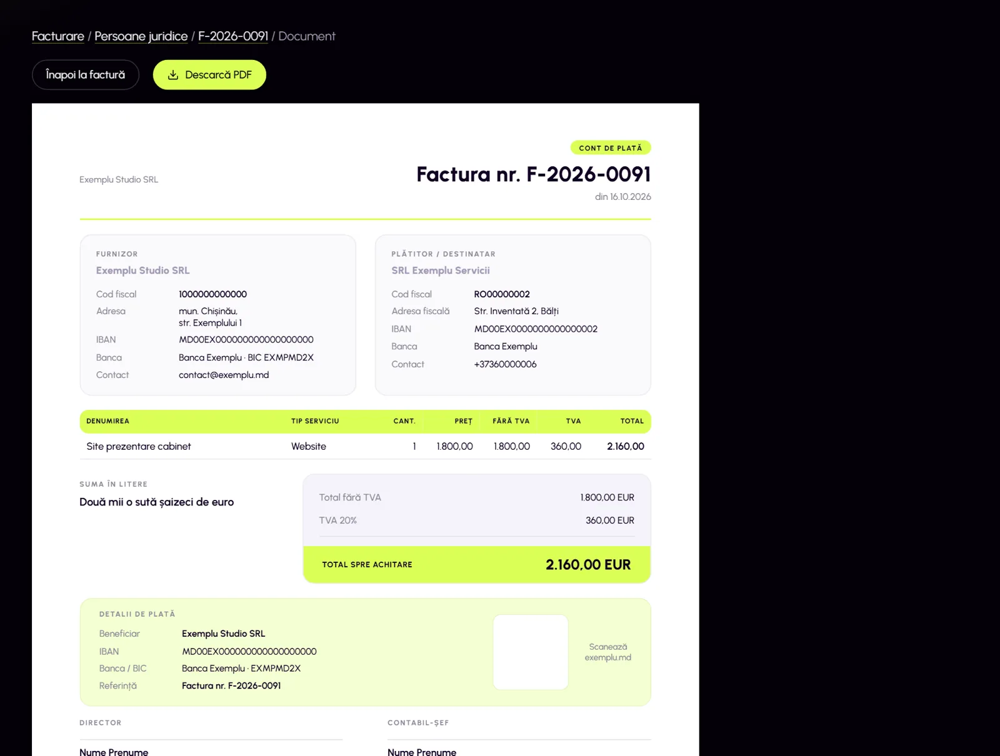
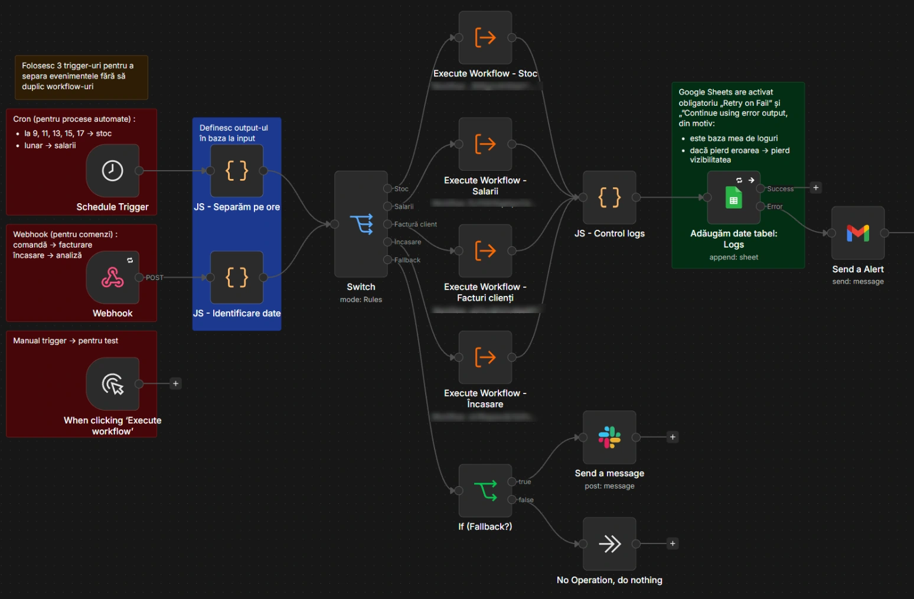
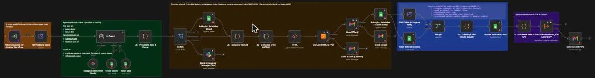
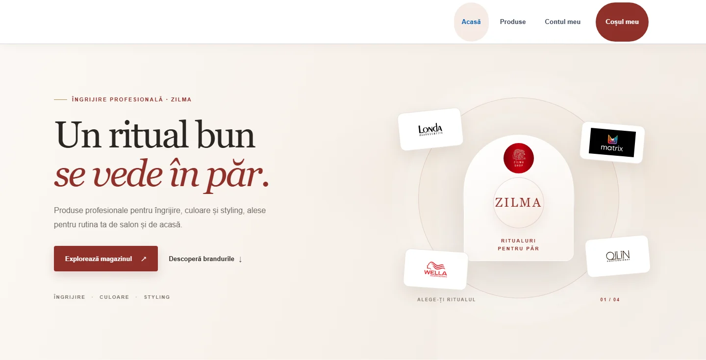
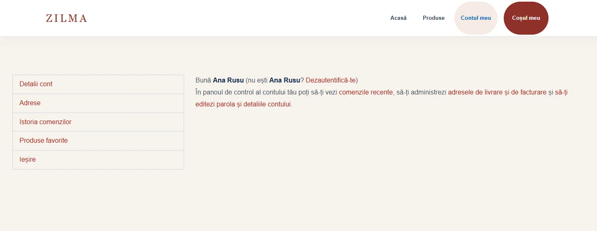

Editorul de factură, cu PDF
- Problema
- Facturile se făceau într-un program separat.
- Soluția
- Un editor în CRM: completezi în stânga și vezi factura în dreapta. PDF-ul pleacă atașat la email.

CRM-ul intern al unei firme care face site-uri și ține cursuri. Am construit partea de facturi, plăți și monitorizarea site-urilor clienților: întâi ca fluxuri n8n, apoi direct în aplicație.
pull requesturi revizuite
teste automate
migrări de bază de date



Proiectul meu final la cursul „AI Automation în n8n”: automatizează operațiunile interne ale unei firme mici care vinde produse. Google Sheets e baza de date, iar anunțurile pleacă pe Slack și Gmail.
fluxuri: unul principal, 5 sub-fluxuri și unul pentru erori
noduri în total
declanșatoare: comandă (webhook), program orar și manual

Agentul AI găsește clientul și produsele, face factura în HTML, o transformă în PDF, scade stocul și o trimite pe email.
Propune comenzi către furnizori, verifică bugetul și cere aprobare pe Slack. Face oferte pentru produsele care expiră.
Potrivește plățile cu facturile și le marchează achitate, achitate parțial sau plătite în plus.
Citește pontajele trimise pe Slack (PDF, Excel sau text), calculează salariile, cere aprobare și anunță angajații.
Indicatori zilnici și lunari și fluxul de numerar.
Orice eroare ajunge în jurnal și ca alertă pe email. Pașii critici au reîncercări separate.

Prezentările unui curs de automatizări AI, refăcute în HTML în noua identitate vizuală a școlii, apoi traduse în rusă.
lecții, în română și rusă
slide-uri (153 în fiecare limbă)
de termeni în glosar
Slide-urile de mai sus sunt redesenate. Materialele cursului aparțin școlii, așa că pe cele reale le arăt la interviu.
Un bot pentru o agenție imobiliară. Același chat servește doi oameni diferiți: clientul care caută o casă și agentul care o vinde.
Un magazin online de produse profesionale pentru păr (Londa, Wella, Schwarzkopf, Matrix, Ollin), făcut de la zero și administrat de mine.


Din cele 12 teme ale cursului, acestea sunt cele care rezolvă cel mai bine o problemă reală.
Răspunde clienților în mesaje, cu doi agenți AI. Înainte de trimitere, un om aprobă răspunsul pe email.
WebhookGraph API35 noduriIa atașamentul din Gmail, AI-ul verifică dacă e o factură și îi trece datele în Notion.
GmailNotion21 noduriTrei agenți AI caută pe web, scriu postarea și descriu imaginea, apoi un model o generează și postarea se publică.
TavilyFlux18 noduriIa ideile dintr-un tabel, scrie scenariul, creează videoclipul și îl urcă pe canal, la oră fixă.
json2videoYouTube21 noduriCe nu are voie să se întâmple e oprit de baza de date, nu doar de interfață. Fiecare schimbare e o migrare, încercată întâi pe o bază de test.
-- Două rulări aproape deodată creau două sarcini „De facturat” pe același proiect. create unique index o_sarcina_de_facturat_pe_proiect on tasks (project_id) where source = 'facturare-automata' and status not in ('finalizat', 'anulat');
alter table invoices add constraint un_singur_platitor check ((project_id is null) <> (enrollment_id is null));
(now() at time zone 'Europe/Chisinau')::date